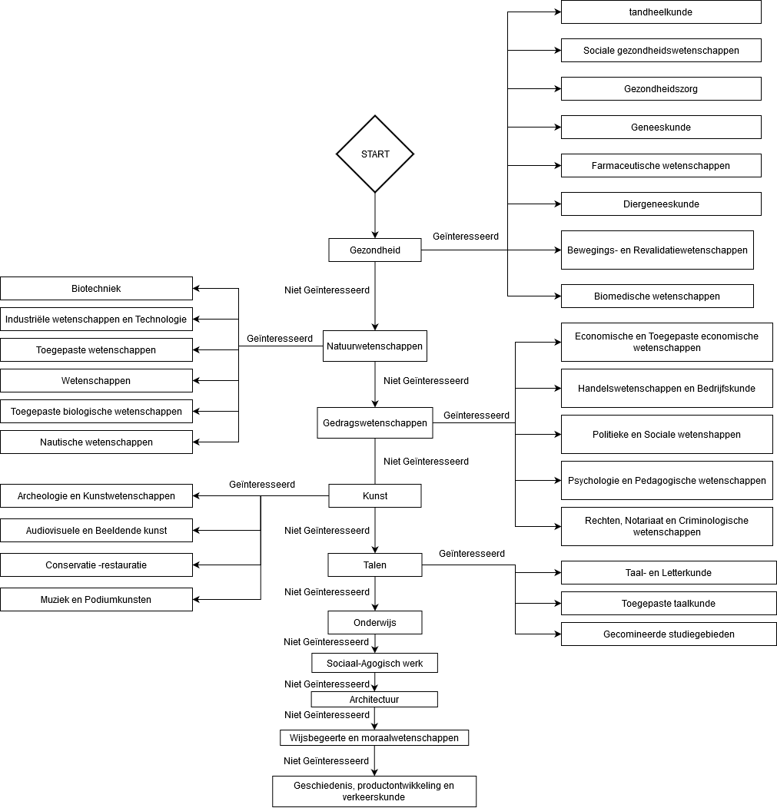

Opbouw opleidingsadviseur
De drie basis functionaliteiten van de chatbot zijn:
- Antwoorden op klassieke, veel gestelde vragen i.v.m. opleidingen en hoger onderwijs
- Studenten een gepast studiegebied voorstellen aan de hand van een specifiek onderwerp bijv.: economie.
- Studenten die nog geen ideeën hebben van wat zij willen doen proberen te helpen om een studiegebied te vinden.
Het doel van dit eindwerk is om een chatbot te maken dat als opleidingsadviseur zou kunnen dienen of alleszins te zien of dit mogelijk is. Om te kunnen beschouwen dat deze opdracht gelukt is, moet de chatbot dus een student kunnen helpen met zijn opleidingskeuze, deze drie functionaliteiten moeten er samen voor zorgen dat dit het geval is.
De twee eerste functionaliteiten zijn redelijk eenvoudig op te stellen. De klassieke vragen hebben allemaal een duidelijk antwoord en een studiegebied is verbonden aan een aantal onderwerpen of domeinen.
Wat de derde functionaliteit betreft is het probleem veel ingewikkelder en moet ik eerlijk toegeven dat ik niet weet of ik de beste implementatie hiervan zal kunnen vinden. Een opleiding voorstellen is extreem moeilijk aangezien het aantal parameters die in rekening gehouden kan worden heel groot is. Er kan met zowel objectieve als subjectieve criteria rekening gehouden worden. Welke criteria zijn belangrijker? Moet de chatbot enkel rekening houden met een van deze twee soorten criteria, dus voorstellen baseren op statistieken, vraag op arbeidsmarkt en voorspellingen of op voorkeur, interesses en passies.
De opleidingskeuze vooral baseren op objectieve criteria was in het begin mijn doel. Het was volgens mij de beste techniek om op zo goed mogelijke opleidingen terecht te komen voor een student. Het probleem is dat er geen beschrijving bestaat van een “goede” opleiding. Wat is een “goede” opleiding? Goed voor wie of voor wat. Iedereen heeft verschillende criteria. Boekhouder is een knelpuntberoep, je wordt waarschijnlijk goed betaald en zal volgens sommige mensen een goed beroep hebben, maar hebben boekhouders een passie voor boekhouden? Is boekhouden een future-proof beroep? Is boekhouden een creatief beroep? Zijn boekhouders in het algemeen gelukkig?
Ik stel deze vragen met dit beroep maar zou hetzelfde kunnen doen met een muzikant of een wetenschapper.
Ik stel mij ook de vraag of een beroep belangrijk moet zijn om goed te zijn, belangrijk in de zin dat het echt een positieve invloed heeft op de maatschappij. Is marketing goed (Ik zou voor dit beroep ook kunnen denken aan de impact op de omgeving, overbodige consumptie van goederen die wij niet nodig hebben)? Hangt het af waarvoor?
Door al deze vragen en nog veel meer waaraan gedacht kan worden, denk ik dat er moeilijk rekening gehouden kan worden met iets anders dan de voorkeur van de gebruiker om tot aan een beslissing te komen. De gebruiker beslist zelf of hij een opleiding goed vindt op basis van criteria die hij voor zichzelf heeft. Dit is trouwens de beslissing die volgens mij een grote meerderheid van online testen gedaan heeft (100% van deze die ik uitgeprobeerd heb) en waarschijnlijk ook de niet-online testen.
Op onderwijskiezer staat een lijst van 33 studiegebieden. Elk gebied bevat een heleboel opleidingen. Ik ga deze lijst gebruiken om tot een voorstel te komen. Eerst ben ik begonnen met het kopiëren van alle studiegebieden in een Excel file. Daarna heb ik deze studiegebieden nog proberen te groeperen in verschillende grotere groepen. Er zijn bijvoorbeeld meerdere studiegebieden i.v.m. de gezondheid (Geneeskunde, Gezondheidszorg, Diergeneeskunde, …). Deze groepering was redelijk eenvoudig maar de volgende groeperingen waren moeilijk.
Uiteindelijk heb ik deze groeperingen behouden:
- Gezondheid
- Kunst
- Natuurwetenschappen
- Gedragswetenschappen
- Talen
Er zijn ook 7 studiegebieden waarvoor ik geen groep heb kunnen vinden:
- Verkeerskunde
- Sociaal-agogisch werk
- Productontwikkeling
- Onderwijs
- Geschiedenis
- Architectuur
- Wijsbegeerte en Moraalwetenschappen
Aan de hand van deze gegevens heb ik een schema gemaakt die alle studiegebieden bevat. Het schema geeft ook weer in welke volgorde de chatbot de vragen gaat stellen.
Waarschijnlijk zal ik tegen het einde van deze week mijn chatbot proberen te hosten om zeker te zijn dat dit goed werkt. Daarna zal ik het QnA gedeelte van de chatbot maken of de website maken waarop ik de chatbot wil afbeelden. Ik dacht ook dat ik eventueel een gedeelte aan de chatbot zou kunnen toevoegen die opleidingen voorstelt die in verband zijn met de studierichting die studenten in het ASO aan het volgen zijn.
Bedankt voor het lezen.
Nicolas Pecher